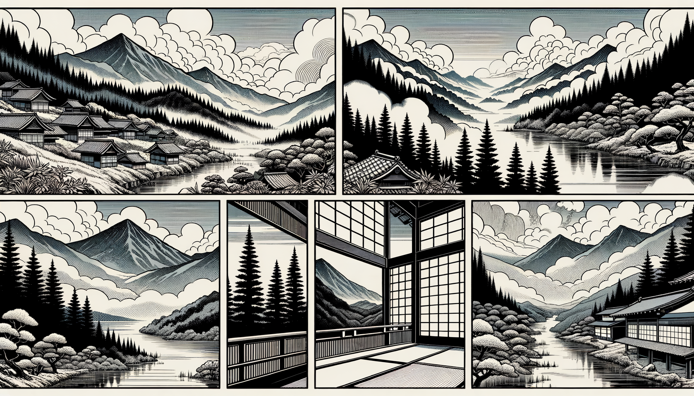

七十五巻 巻一覧
正法眼藏第70 虛空
本紹介ページの導入・語彙・深掘り・クイズは tools/regen_volume_intro_from_corpus.py が OpenAI API で生成したものです（入力は当巻の原文からの短い抜粋のみ）。内容はモデル出力のため、重要箇所は必ず原文・教本と照合してください。
出典: https://shomonji.or.jp/zazen/doc/genzou.html
原文・現代語訳の全文は 全文ページを参照してください。
この巻の紹介（導入）
この巻では、虛空の本質とその理解についての問答が展開されています。
西堂と石鞏の間でのやり取りを通じて、虛空を捉えることの難しさが示されています。
語彙の足場
- 虛空：物質的な存在を超えた空間や状態を指し、仏教においては真理や空の概念を象徴する。
- 道現成：道が現れて成就すること。仏教においては、悟りや真理が実現することを意味する。
- 捉得：何かをつかむこと、理解すること。特に、抽象的な概念を把握することを指す。
- 染汚：心や存在が外的な影響によって汚されること。仏教では煩悩や執着による影響を指す。
- 講經：経典を講じること。仏教において教えを広める重要な行為。
原文（要点の抜粋）
当巻の冒頭付近からの短い抜粋です。長い引用は載せていません。 全文は全文ページを参照してください。出典はリポジトリ内 doc/正法眼蔵.txt です。原文の参照元: https://shomonji.or.jp/zazen/doc/genzou.html
這裏是什麼處在のゆゑに、道現成をして佛祖ならしむ。佛祖の道現成、おのれづから嫡嫡するゆゑに、皮肉骨髓の渾身せる、掛虛空なり。虛空は、二十空等の群にあらず。おほよそ、空ただ二十空のみならんや、八萬四千空あり、およびそこばくあるべし。
撫州石鞏慧藏禪師、問西堂智藏禪師、汝還解捉得虛空麼（撫州石鞏慧藏禪師、西堂智藏禪師に問ふ、汝還た虛空を捉得せんことを解する麼）。
西堂曰、解捉得（捉得せんことを解す）。
師曰、儞作麼生捉（儞作麼生か捉する）。
西堂以手撮虛空（西堂、手を以て虛空を撮す）。
師曰、儞不解捉虛空（儞虛空を捉せんことを解せず）。
西堂曰、師兄作麼生捉（師兄作麼生か捉する）。
師把西堂鼻孔拽（師、西堂が鼻孔を把りて拽く）。
西堂作忍痛聲曰、太殺人、拽人鼻孔、直得脱去（西堂、忍痛の聲を作して曰く、太殺人、人の鼻孔を拽いて、直得脱去す）。
師曰、直得恁地捉始得（直に恁地に捉することを得て始得ならん）。
石鞏道の汝還解捉得虛空麼。
なんぢまた通身是手眼なりやと問著するなり。
図解（4コマ・AI生成）
教義の根拠は原文・出典に従い、漫画は比喩の補助に留めてください。

深掘り（読解の手掛かり）
- 西堂は虛空を手で捉えようとするが、実際には捉えられないことを示す。
- 石鞏は虛空を捉えることの難しさを強調し、理解の深さを問う。
- 虛空は単なる空間ではなく、深い哲学的な意味を持つ。
- 講經は虛空を通じて行われ、仏教の教えが伝えられる。
確認（形成評価）
各設問の下の「採点」で正誤を表示します（ブラウザ内のみ。ログは送りません）。